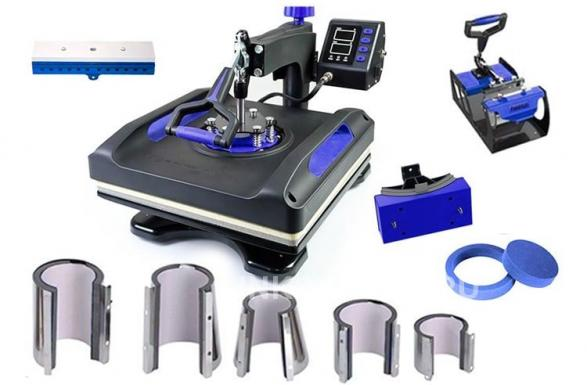
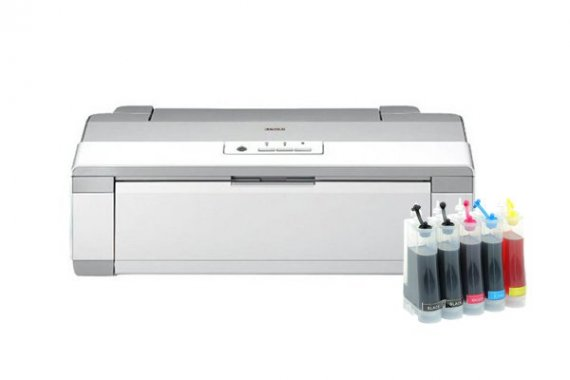
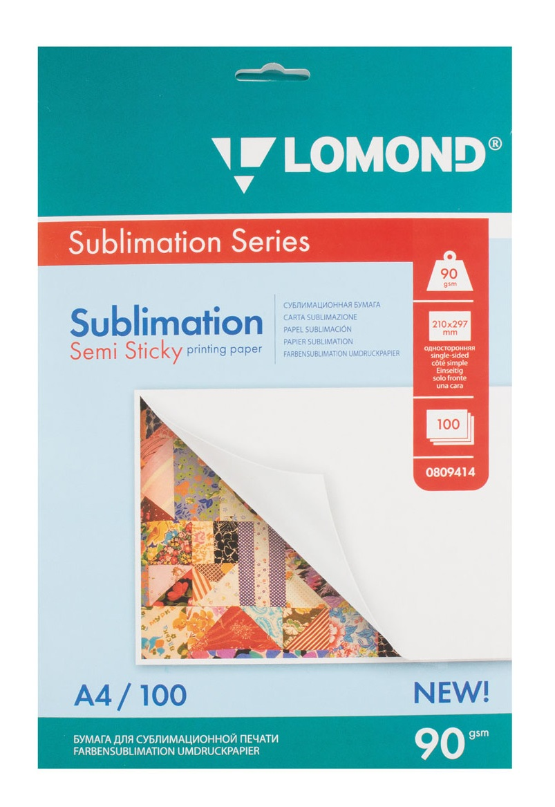
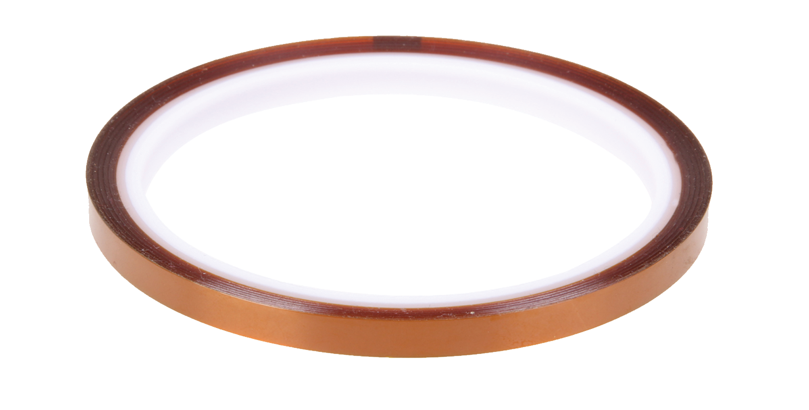

Что понадобится для первой печати
Термопресс под форму кружки
Ориентировачная цена ~75.000₽
Есть у нас в наличии
Принтер PX-1004
Ориентировачная цена ~50.000₽
Сублимационная бумага
Ориентировачная цена ~800₽ Ссылка
Термостойкая лента
Шрина ленты 4-8 мм. Рабочая температура 250-350°C
Ориентировачная цена ~230₽ за 33м ленты
| Термопресс под форму кружки | |
| Принтер PX-1004 | 50.000₽ |
| Сублимационная бумага | 800₽ |
| Термостойкая лента | 230₽ |
| Всего | 51.030₽ |